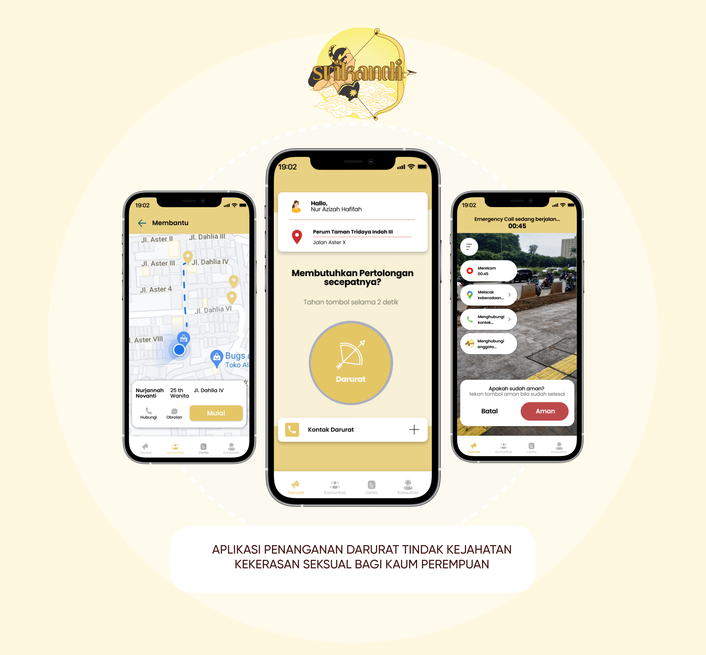
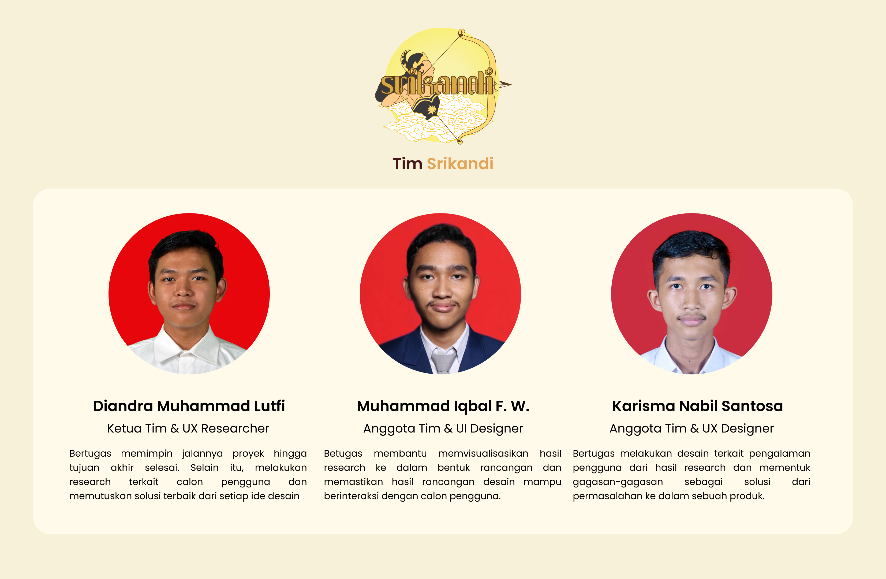
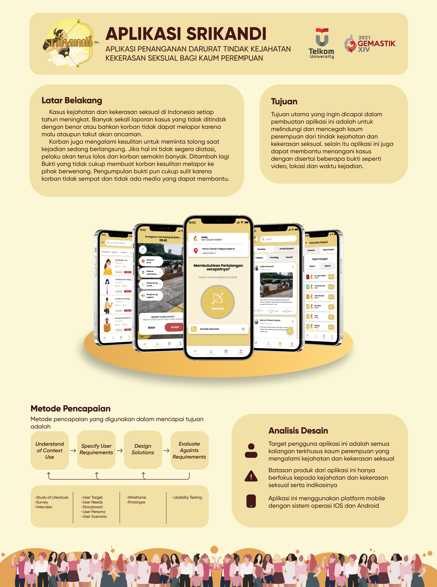

Aplikasi Srikandi
  My Story
Pembuatan desain aplikasi srikandi ini didasarkan pada tema lomba Gemastik ke XIV 2021 yaitu "TIK untuk Indonesia Bangkit Menuju Kehidupan Bangsa yang Lebih Baik". Kami mencari sesuatu hal yang sedang "happening" dan menemukan bahwa tindak kejahatan & kekerasan seksual bagi kaum perempuan yang masih belum mendapat penanganan yang efektif dan efisien. Maka kami menentukan merancang aplikasi penanganan darurat tindak kejahatan & kekerasan seksual bagi kaum perempuan ini dengan latar belakang kejahatan dan kekerasan seksual terus meningkat dan pelaporan yang sulit lantaran kesulitan membuat bukti untuk diserangkan ke pihak berwenang.
Permasalahan tersebut kami dapatkan dari studi literatur seperti mengulik artikel dan berita serta melakukan survey menggunakan google form.
Solusi pada aplikasi
Menurut saya permasalahan tersebut bisa diselesaikan dengan membuat tombol darurat yang mana dapat mengirim sinyal bantuan ke seluruh pengguna aplikasi. Saya sendiri melakukan research pada beberapa aplikasi yang ada di playstore yaitu Red Panic Button dan Gojek. Kemudian saya ambil beberapa fitur yang ada pada aplikasi-aplikasi tersebut dan dijadikan solusi dari pemasalahan.
Pada tampilan beranda pada aplikasinya terdapat tombol darurat seperti panic button yang mana korban dapat langsung menekan tombol tersebut. Tujuannya agar ketika kondisi korban sedang dalam tekanan oleh pelaku, korban masih dapat mengaktifkan tombol darurat tersebut secara sembunyi-sembunyi atau terang-terangan. ketika tombol berhasil ditekan maka otomatis kamera akan menyala dan merekam. Selain itu aplikasi akan mengirimkan sinyal darurat ke wilayah terdekat dengan mengaktifkan GPS yang terhubung ke google maps. Setelah selesai merekam, otomatis akan diposting ke timeline laporan, dan seluruh user dapat melihat postingan tersebut dan bisa membantu melaporkan ke pihak berwenang
Untuk pengguna sendiri umumnya kami kategorikan menjadi:
- User Korban
- User Guardians
User Guardian adalah user yang telah mendaftarkan dirinya kedalam komunitas guardian yang ada di dalam aplikasinya sebagai sukarelawan yang akan terjun ke tempat kejadian perkara. Lalu, disaat user korban mengirimkan sinyal bantuan, handphone user guardian akan menerima notifikasi darurat. Kemudian, ketika notifikasi dibuka akan menunjukan lokasi korban dalam bentuk tampilan google maps. (mirip aplikasi Gojek / Grab). User Guardian dapat menelusuri rute dan bisa menyelamatkan korban. Untuk eksekusi penyelamatannya sendiri Guardian dapat melakukan laporan yang sama dengan memencet tombol darurat dan mempostingnya ke timeline laporan. Dengan begitu laporan dapat dikatakan valid. Semua hasil rekaman akan langsung tersimpan ke database aplikasi dan storage handphone user.
Alternatif lain, user guardian dapat memanggil orang sekitar untuk membantu atau menelpon pihak berwenang. Kontak pihak berwenang akan disediakan di dalam aplikasi.
Bagaimana hasilnya?
Hasilnya kami masih belum bisa lolos ke tahap selanjutnya. Kami menyadari bahwa banyak sekali kekurangan dalam pengerjaan lomba ini. Adapun kekurangan yang kami dapat adalah:
- Ruang Lingkup proyek yang tidak konsisten dan terlalu lebar sehingga fokus dari penyelesaian masalah menjadi kurang solutif.
- Kami tidak menyadari bahwa lomba yang diikuti adalah Desain Pengalaman Pengguna (UX Design) sehingga kami terlalu menitik berartkan kepada visual / UI Design. Hal tersebut menjadi kesalahan yang besar lantaran UI Design tidak masuk kedalam komponen penilaian dan justru komponen lain yang nilainya lebih besar kami tidak teliti lebih dalam.
Untuk kedepannya, saya akan belajar lebih banyak dan teliti lagi terkait UI/UX Design.
Itulah beberapa cerita singkat mengenai aplikasi ini. Untuk cerita lebih lengkapnya dapat diakses melalui link berikut.